Xyh Tamura is a Filipino/Ilonggo-Japanese artist-researcher, songwriter, and creative technologist based in Manila, working across intermedia art, electronic literature, and software development. Their practice links songwriting, moving image, and installation with computational instruments: physical-modeling synthesizers, microtonal notation, and client-side media processors. They hold a BS in Physics, cum laude, from UP Diliman (Theoretical Physics). The instruments in this portfolio implement mathematical models directly: digital waveguides, atmospheric ray tracing, memristive state histories, fluid simulations, and two-dimensional mechanics.
Seven browser instruments in which a two-dimensional physics simulation drives the sound
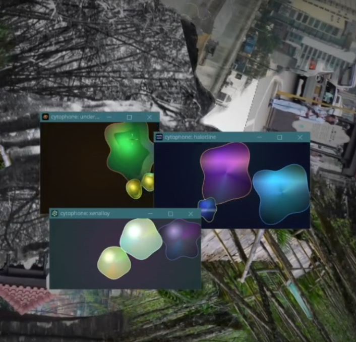
A suite of seven browser instruments where two-dimensional physics simulations generate sound in real time using the Web Audio API. Players interact directly with animated physical bodies on an HTML canvas: striking circular cell membranes, plucking elastic fiber networks, perturbing fluid boundaries, and opening pressure-sensitive stomatal pores. Geometric traits, including body radius, edge tension, collision velocity, and material damping, calculate acoustic properties directly to excite modal resonators, delay lines, and digital waveguides.
Three instruments integrate live environmental telemetry alongside touch: regional marine wave data from Open-Meteo, global earthquake feeds from the USGS, and local atmospheric data from Manila perturb fluid drift and modulate resonance. Each instrument is a self-contained web page running in mobile and desktop browsers with no installation, supporting touch gestures on phones as well as mouse input.
Xyh Tamura2
Field recording · found score · voice
kíkik 2026
Electroacoustic piece and browser tool · audio onset analyzer and hit-seeded granulator with MIDI and audio output
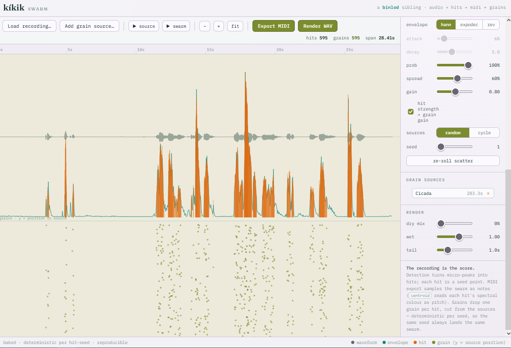
The piece and software derive from a 2016 field recording of the cicada Platypleura fulvigera made in Diliman. The software analyzes the audio for transient micro-peaks to extract a found score. Each detected attack triggers a MIDI note whose pitch follows the local spectral centroid, while releasing a grain from a spoken poem in Hiligaynon, Japanese, and English, locking vocal articulation to the insect rhythm.
Kíkik is the Hiligaynon name for cicada. In Panay and Luzon, as in Japan, cicadas serve as vernacular acoustic markers of season, hour, and temperature. The composition's sung melody quotes Dandansoy, a traditional Ilonggo song of departure, carried across the granular synthesis alongside the cicada chorus.
Xyh Tamura3
Ray tracing · room acoustics
Gliese 2025–2026
A multi-tap delay and reverb generator deriving its delay taps from sound rays traced through a model atmosphere
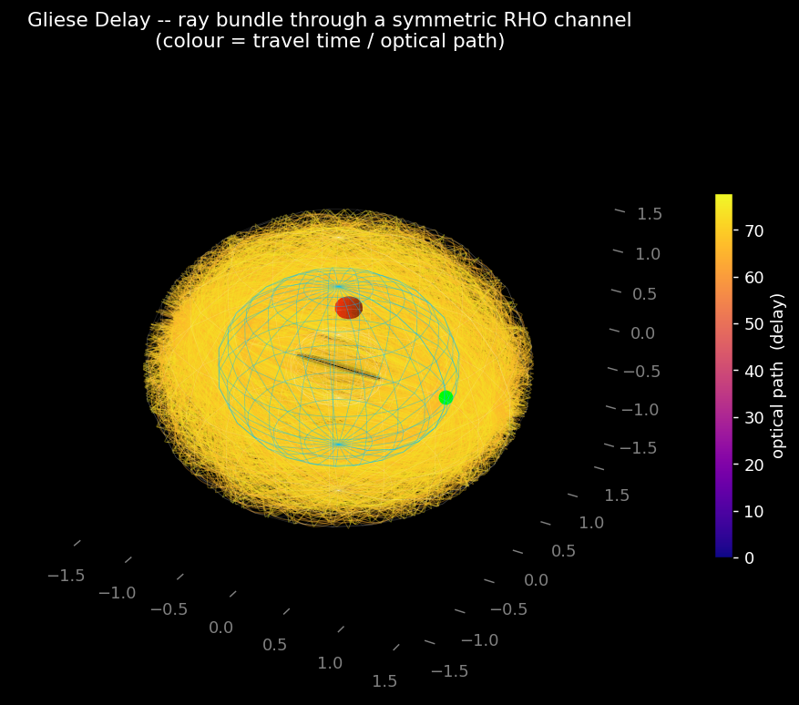
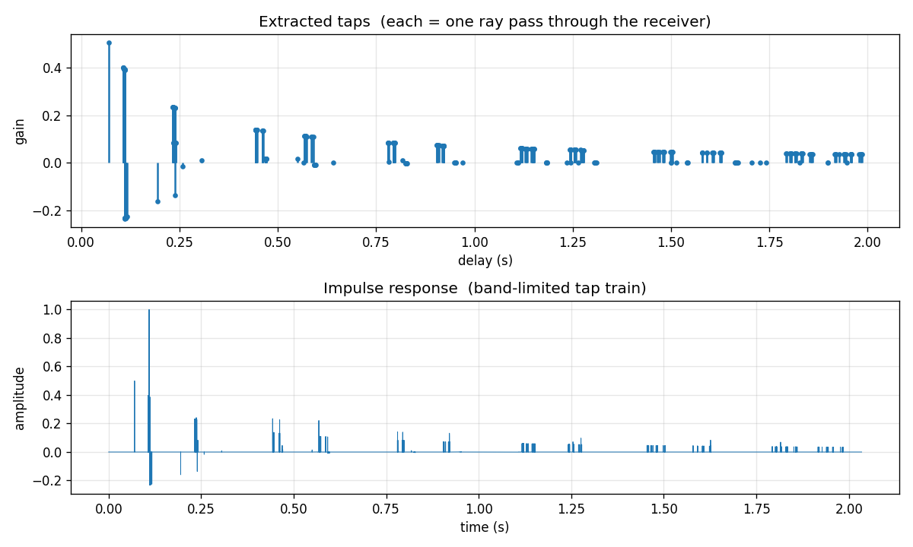
A multi-tap delay and acoustic reverberation tool that derives reflection schedules by tracing sound rays through a model planetary atmosphere. The refractive-index profile defines an axial acoustic sound channel. Rays launched from a point source are numerically integrated using the velocity Verlet method, reflecting between concentric inner and outer boundaries. Each receiver intersection records a delay tap whose gain accounts for geometric spreading and boundary absorption, scaled so the first arrival matches a specified pre-delay.
The acoustic model derives from undergraduate thesis research at the National Institute of Physics, UP Diliman (2012), on ray propagation in spherically symmetric refractive media treated through a Lagrangian formulation (adviser Jose Perico H. Esguerra).
Xyh Tamura4
Memristor synthesizer · history of science
Physa · Biomemristor as Instrument 2026
A browser instrument and extended abstract (September 2026) on the contested circuit model it implements
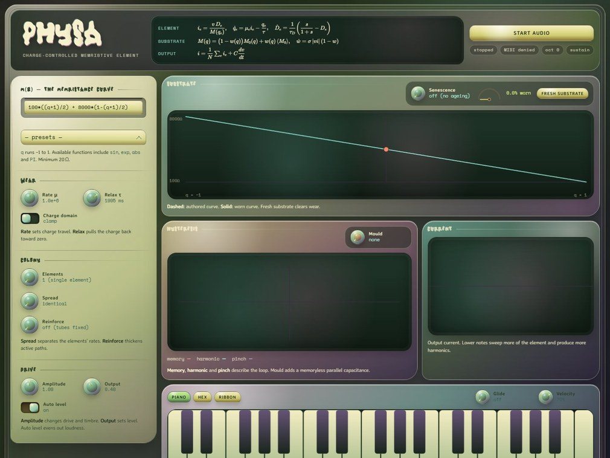
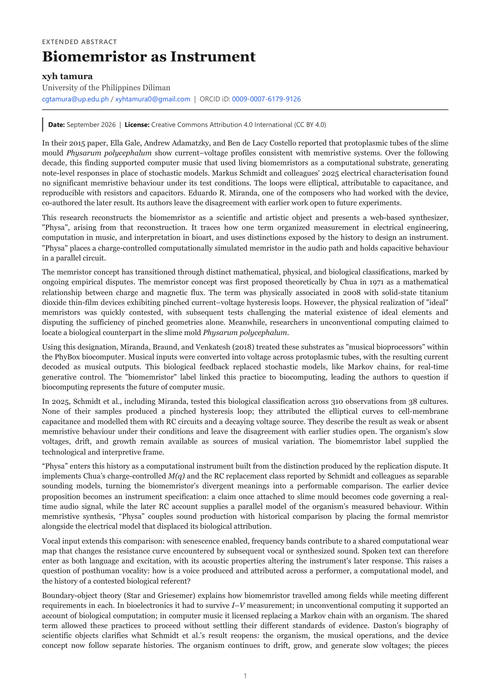
Physa is a monophonic browser instrument and input processor. A simulated charge-controlled memristor processes the audio path in parallel with an RC circuit modeling capacitive effects. When senescence is enabled, spectral energy feeds a shared wear map that deforms the memristive resistance curve over time, allowing incoming audio signals to alter the instrument's subsequent transfer function.
Biomemristor as Instrument traces a contested circuit model across materials science, biophysics, and computer music. In 2015 the slime mold Physarum polycephalum was reported as a biological memristor, initiating a decade of experimental sound works based on the claim. A 2025 characterization of 310 observations across 38 cultures demonstrated an absence of pinched hysteresis loops, attributing the elliptical curves to linear capacitance. The extended abstract specifies Physa directly from that dispute, contrasting the memristive model and the capacitive RC model as parallel sounding circuits for comparative performance.
Xyh Tamura5
Digital waveguide · electroacoustic theory
The Unbounded Organ · Composition Without Audition 2026
A physical-modeling organ synthesizer with no range restriction, and an abstract (September 2026) on compositions beyond the hearing floor
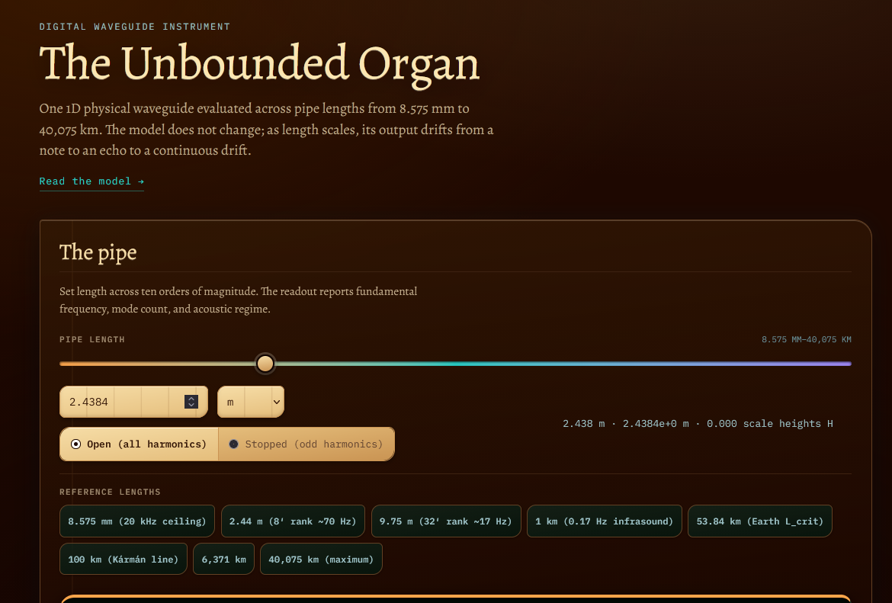
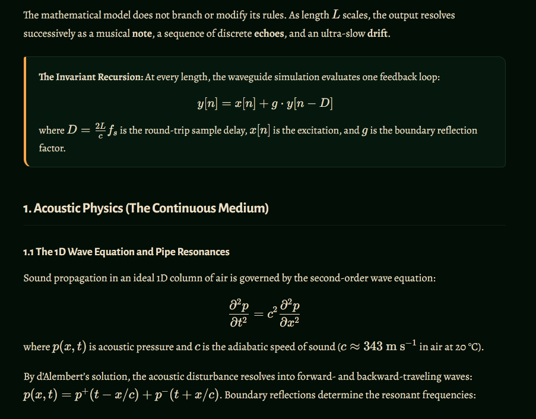
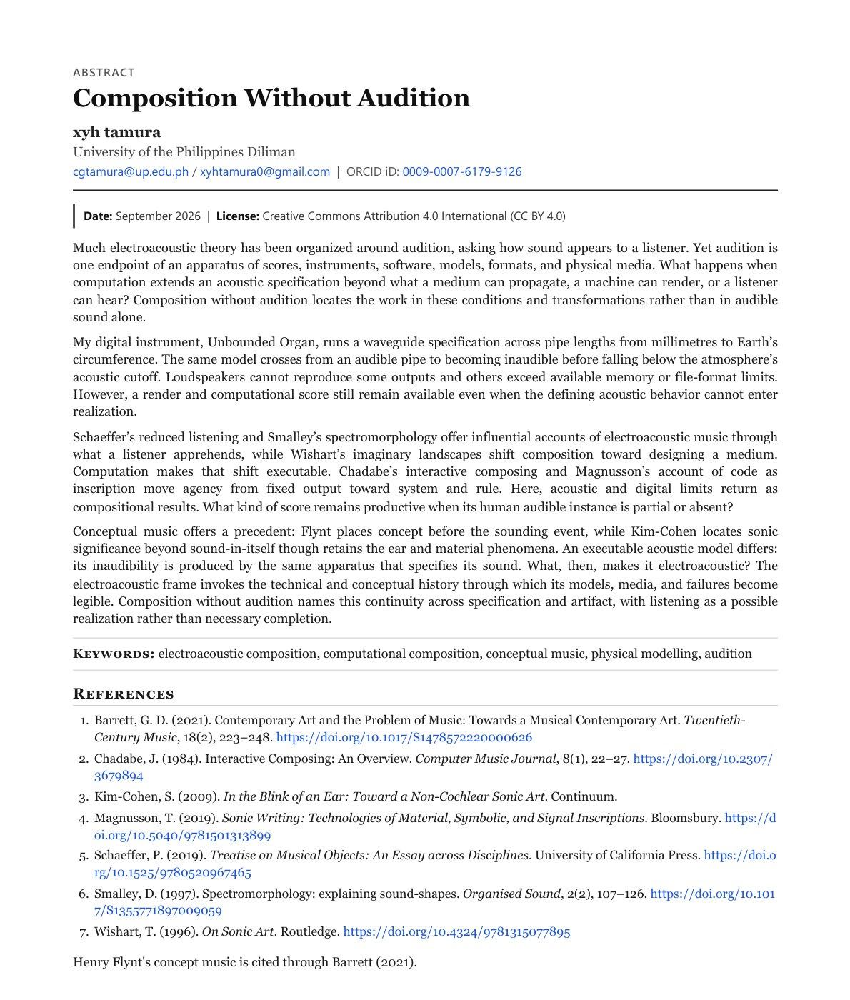
The Unbounded Organ is a browser-based physical-modeling synthesizer that models an idealized pipe as a digital waveguide delay line of length 2L/c with boundary reflections. Harmonic modes emerge directly from delay-line geometry rather than a fixed bank of oscillators. The specification evaluates pipe lengths from 8.575 millimeters to 40,075 kilometers: meters yield audible musical notes, tens of kilometers produce diffuse delay echoes, and planetary dimensions reach millihertz and microhertz fundamentals (26.92 µHz at Earth's radius, an oscillation period of 10.32 hours).
Composition Without Audition treats the inaudible limits of physical modeling as compositional results. When an acoustic model produces frequencies below atmospheric cutoffs or data volumes exceeding storage and hardware limits, loudspeakers cannot reproduce the sound. The work instead exists across the computational apparatus of models, symbolic scores, and formats, treating listening as one possible realization rather than a necessary completion.
Xyh Tamura6
Ambient display · Raspberry Pi
Deskarium 2026
A sound-responsive ASCII marine display on a 1024 × 600 desk panel driven by a Raspberry Pi 4B. The simulation runs on an internal clock modulated by room acoustics: sustained vocalizations or sounds raise a collective interest variable that retains fish within the frame, whereas extended silence allows them to swim out past the boundary. Hardware controls comprise three buttons and a rotary encoder with an onboard microphone and speaker; the video demonstrates threshold calibration in the audio menu.
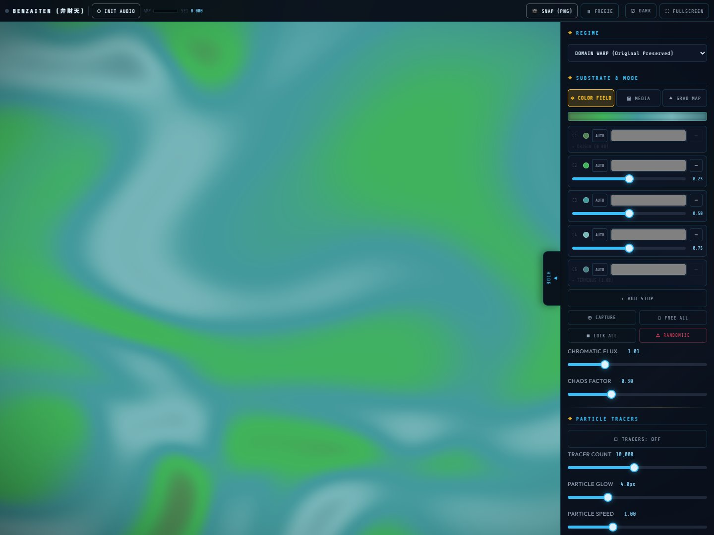
Video synthesizer · fluid simulation
Benzaiten 2026
A real-time video synthesizer driven by a two-dimensional fluid simulation executed on a 256² GPU grid. The engine computes semi-Lagrangian velocity advection, curl-noise vorticity stirring, and pressure projection in WebGL shaders. Source textures—procedural color fields, static images, video loops, or live webcam feeds—are advected through the velocity field, while Web Audio FFT analysis couples room sound directly to fluid forces.
Xyh Tamura7
Research, place, and installation
Tanim-Kalye 2025
Quezon City Biennial · exhibited at Carinderia Sefali, Krus na Ligas · developed with residents, the local governing unit, and botanical experts from the UP Institute of Biology
A site-specific installation and participatory research project commissioned for the Quezon City Biennial and exhibited at Carinderia Sefali in Krus na Ligas. Created with botanists from the UP Institute of Biology, local officials, and neighborhood elders, the project maps medicinal and culturally significant plants across the neighborhood street grid using high-contrast botanical film prints mounted on transparent acetate window displays.
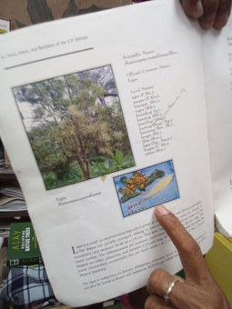
p14-dLigas entryTanim-Kalye fieldwork archiveTHUMBNAIL · fills a 30mm strip cellp14-eHerbarium doorTanim-Kalye fieldwork archiveTHUMBNAIL · fills a 30mm strip cellp14-fBarangay hallTanim-Kalye fieldwork archiveTHUMBNAIL · fills a 30mm strip cellp14-gWith a residentTanim-Kalye fieldwork archiveTHUMBNAIL · fills a 30mm strip cellp14-hHousehold print, 1969Tanim-Kalye archiveTHUMBNAIL · fills a 30mm strip cell
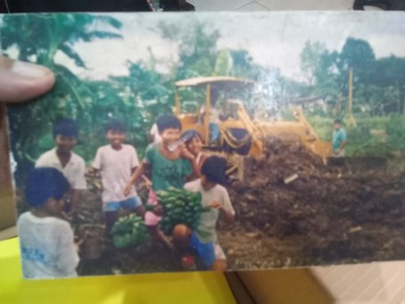
p14-iHousehold printTanim-Kalye archiveTHUMBNAIL · fills a 30mm strip cell
Fieldwork — the Ligas entry and the door of the UP herbarium; the barangay hall and an alley in Krus na Ligas; two prints from a household archive, the first dated October 1969.
Xyh Tamura8
Non-causal media processing
Hindcasts 2025–2026→
Hindcasts is a suite of offline audio and video tools that process a static file as a complete span, operating in both temporal directions before events arrive.
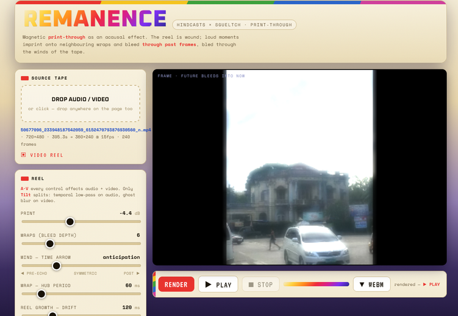
p19-aRemanenceHindcasts suite captureLANDSCAPE · ≥ 1000 px wide
Remanence
An offline audio and video processor that simulates magnetic tape print-through and tape-spool magnetic hysteresis.
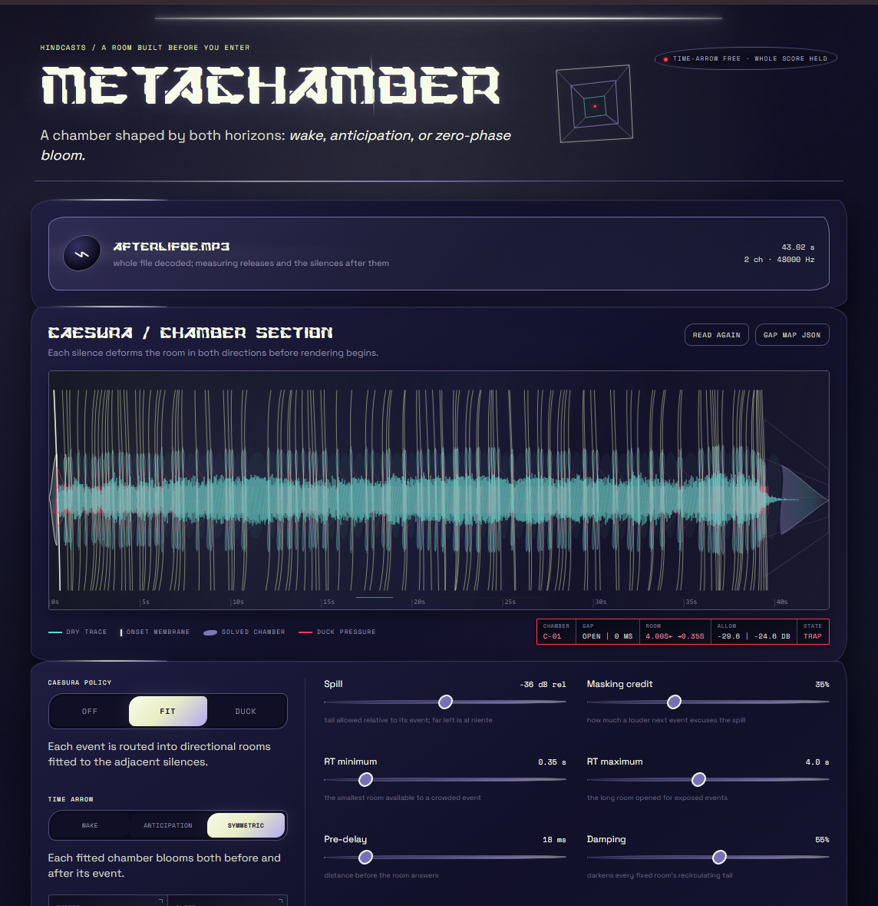
p19-bMetachamberHindcasts suite capturePORTRAIT · ≥ 1000 px wide
Metachamber
An offline acoustic reverberator that measures forthcoming gaps between notes to tailor reverb decay lengths exactly to future silences.
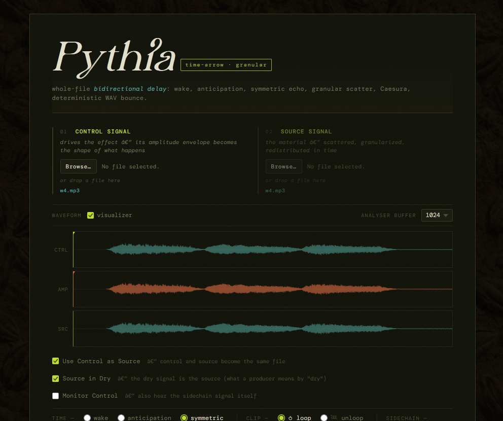
p19-cPythiaHindcasts suite captureLANDSCAPE · ≥ 1000 px wide
Pythia
An acausal granular delay and sidechain processor with negative delay, lookahead ducking, and pitch spray.
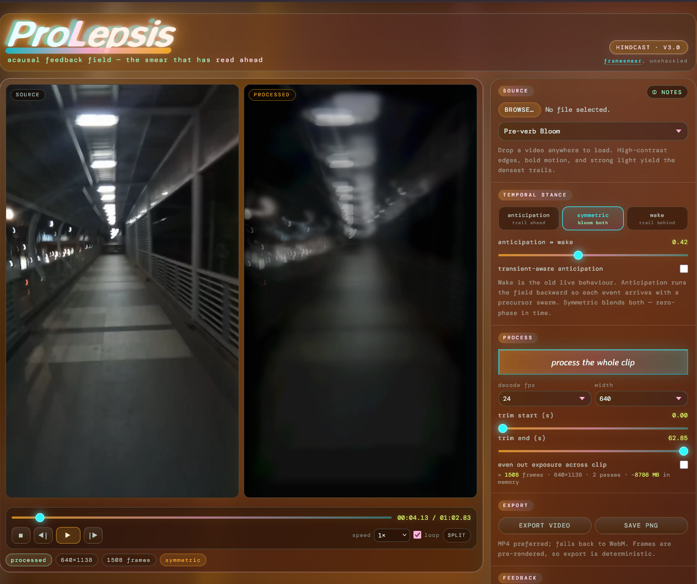
p19-dProlepsisHindcasts suite captureLANDSCAPE · ≥ 1000 px wide
Prolepsis
An offline video feedback generator that renders anticipatory optical particle trails and precursor echoes prior to visual motions.
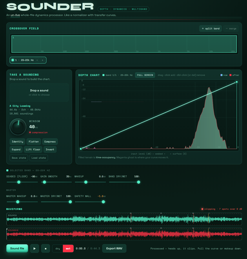
p19-eSounderProject captureLANDSCAPE
Sounder
A multi-band dynamic audio processor that computes time-occupancy amplitude histograms across an entire audio file, letting users redraw custom compression curves without threshold attack/release pumping.
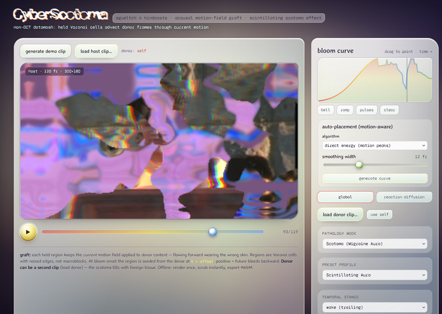
p19-fCyberScotomaProject captureLANDSCAPE
CyberScotoma
An offline video glitch processor that freezes localized screen cells and populates them with image data sampled from future video frames.
Xyh Tamura9
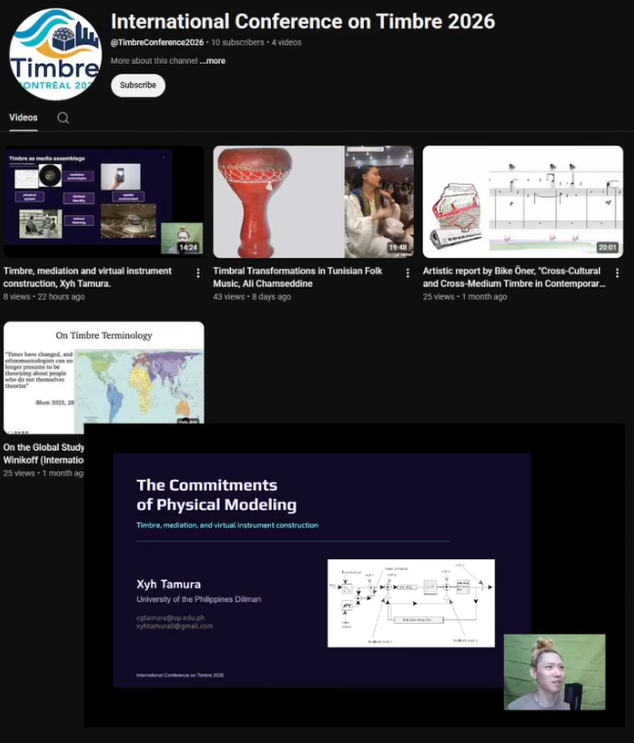
Research · theory of timbre
The Commitments of Physical Modeling 2026
International Conference on Timbre · Université de Montréal · July 2026
Analyzes digital waveguide and modal synthesis implementations as formal theories of timbre. Each synthesis algorithm embeds physical assumptions regarding boundary damping, mechanical excitation, and resonator geometry, which source code records as executable commitments.
Research · philosophy of technology
From Interiority to Interaction 2024–2025
Presented at Denkwerkstatt Berlin, August 2024 · published in Philosophy & Digitality, 2025
A journal article analyzing how human communities attribute personhood and agency to synthetic entities. Drawing on field studies of Sony's AIBO robot memorial services in Japanese temples, the android priest Mindar at Kōdai-ji, and Geminoid androids, the paper argues that attributed interiority is a relational effect produced through interaction framing and social ritual rather than an intrinsic property of a machine.